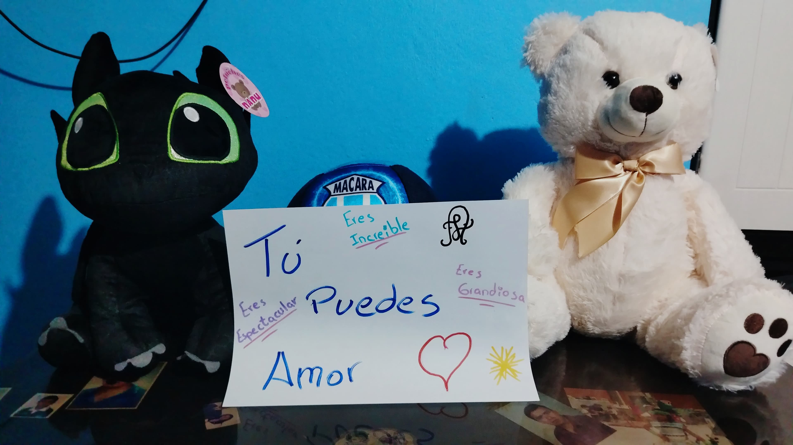

HOY CELEBRAMOS DOS COSAS
Su cumpleaños
&
nuestros 10 meses
Y yo solamente puedo pensar en lo afortunado que soy de tenerla en mi vida.
Mi amor,
Hoy no quería regalarle solamente algo. Quería regalarle un momento. Uno que pudiera guardar en su corazón y recordar cuando algún día miremos hacia atrás y pensemos en todo lo que hemos vivido.
Son 10 meses de nosotros. Diez meses de risas, conversaciones, abrazos, locuras, días bonitos y también días difíciles en los que aprendimos a estar el uno para el otro.
Y hoy, mientras usted celebra un año más de vida, yo celebro también la suerte de poder llamarla mi novia.
La amo muchísimo.
— Su persona 💙
10 MESES CONTIGO
Gracias por estos
10 meses, mi amor.
Diez meses pueden parecer solamente una cantidad de tiempo, pero cuando pienso en todo lo que hemos vivido juntos, siento que dentro de esos diez meses caben muchísimas historias, sonrisas, abrazos, conversaciones, aprendizajes y momentos que guardo con muchísimo cariño en mi corazón.
Gracias por elegirme. Gracias por permitirme compartir una parte de su vida, por confiar en mí, por cada palabra bonita, por cada abrazo, por cada risa y también por dejarme estar en esos días en los que las cosas no han sido tan fáciles.
Quiero que nunca olvide algo, mi Doctorita: estoy profundamente orgulloso de usted.
Orgulloso de la mujer que es, de todo lo que está construyendo, de cada esfuerzo que hace por sus sueños y de la futura doctora que poco a poco está llegando a ser.
Sé que habrá días en los que estará cansada, días en los que sentirá que ya no puede más, días llenos de universidad, hospital, deberes, preocupaciones y cosas que parecen demasiado.
Y quiero que en esos días recuerde que no tiene que cargar con todo sola.
Yo quiero estar ahí.
Para aplaudir sus logros cuando todo salga bien. Para abrazarla cuando algo salga mal. Para escucharla cuando necesite desahogarse. Para recordarle lo increíble que es cuando usted misma lo olvide.
Quiero verla cumplir sus sueños. Quiero verla convertirse en la doctora que tanto desea ser. Quiero verla crecer, aprender, equivocarse, levantarse y seguir adelante.
Y si algún día siente que el camino se hace demasiado largo, quiero que mire a su lado y recuerde que yo voy a estar ahí.

Un pequeño pedacito de nuestra historia. 💙
Gracias por elegirme cada día...
porque yo volvería a elegirla, una y otra vez, en esta vida y en todas las que vengan.
Y TODAVÍA FALTA ALGO
Hice esto para usted
Aquí aparecerá nuestro video
Reemplaza assets/video.mp4 por tu video.5 DE OCTUBRE
Feliz cumpleaños,
mi Doctorita.
Gracias por estos 10 meses. Gracias por dejarme compartir una parte de su vida y por permitirme quererla de la manera más bonita que sé.
Ojalá este sea solamente el décimo de muchísimos meses, cumpleaños y capítulos que todavía nos faltan escribir.
Siempre juntos.